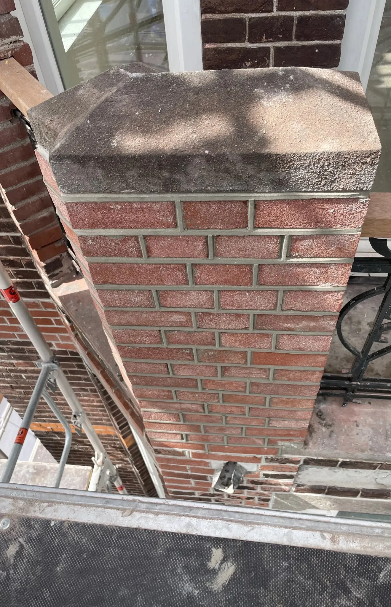
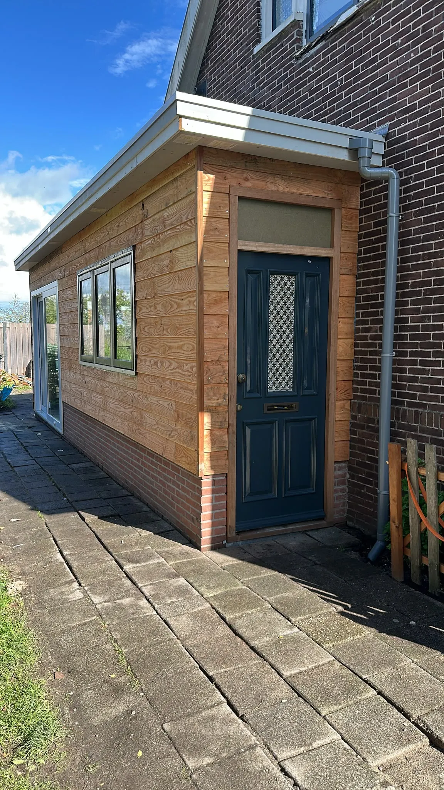
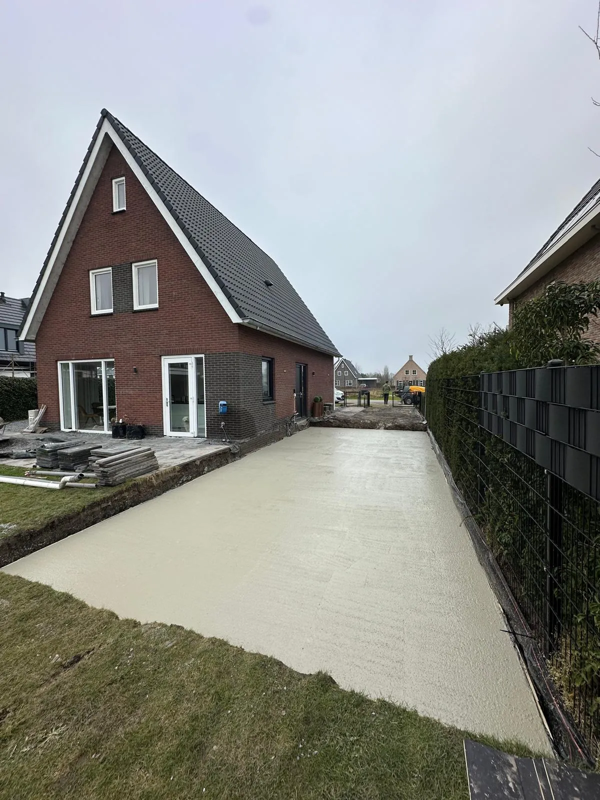
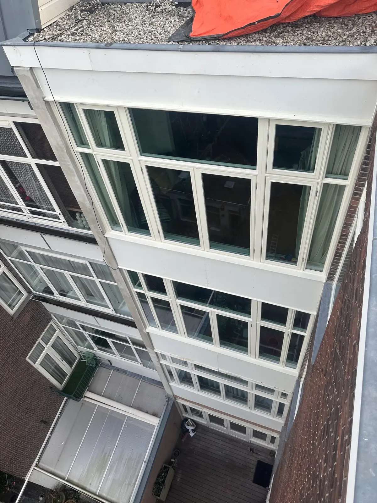
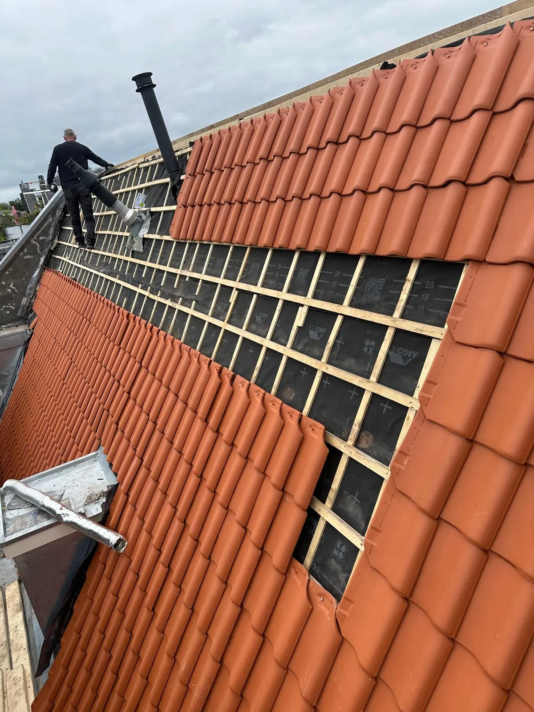
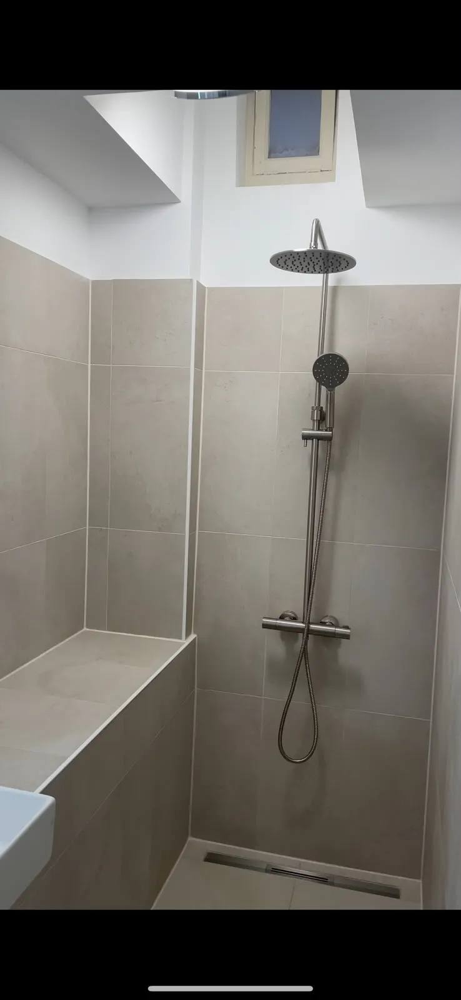

Al meer dan 25 jaar de stille kracht achter de meest prestigieuze renovaties en complexe bouwprojecten.
Vakmanschap, persoonlijke aandacht en kwaliteit tot in ieder detail.
Bij Van der Meer Dienstengroep geloven we dat een geslaagd bouw- of renovatieproject begint met vertrouwen. Daarom nemen we de tijd om naar uw wensen te luisteren, denken we persoonlijk met u mee en zorgen we voor heldere afspraken vanaf het eerste moment.
Van advies en offerte tot de laatste afwerking begeleiden wij het volledige traject met aandacht en vakmanschap. Zo kunt u rekenen op een zorgeloze uitvoering en een hoogwaardig eindresultaat dat aan uw verwachtingen voldoet — en waar mogelijk deze overtreft.
Van der Meer — kwaliteit waarop u kunt bouwen.

Wij herstellen ornamenten, houtwerk en beton vakkundig en met oog voor detail.
Ontdek projecten
Klassiek herstelwerk, platvol voegen en ambachtelijk snijvoegwerk voor monumentale panden.
Ontdek projecten
Realisatie en herstel bij verzakking voor een veilige en stabiele ondersteuning.
Ontdek projecten
Professionele uitbouwen op maat voor extra ruimte, comfort en een strakke afwerking.
Ontdek projecten
Sterke en betrouwbare funderingen zodat uw bouwproject veilig en stabiel staat.
Ontdek projecten
Duurzaam en veilig herstel van balkondragers, betonrot en dragende constructies.
Ontdek projecten
Vakkundige levering en renovatie inclusief glas naar keuze en perfecte isolatie.
Ontdek projecten
Van dakrenovatie en zinkwerk tot snelle lekkageverhelping en schoorsteen restauratie.
Ontdek projecten
Complete transformatie van uw badkamer met hoogwaardig tegelwerk en sanitair.
Ontdek projecten
Professioneel binnen- en buitenschilderwerk en strak stucwerk voor een verzorgd resultaat.
Ontdek projecten
Professioneel reinigen, onderhoud en duurzaam herstel voor een onberispelijke uitstraling van uw pand.
Ontdek projecten
Veilige en VCA-gecertificeerde maatwerk steigers voor complexe projecten en werken op hoogte.
Ontdek projecten"Kwaliteit is geen toeval, het is het resultaat van passie, precisie en jarenlang ononderbroken vakmanschap."— Johan van der Meer | Amsterdam en omstreken
"Wij hebben een uitbouw laten plaatsen en meteen onze gevel laten renoveren aan de Keizersgracht 573 Amsterdam. Alles is perfect uitgevoerd en het huis ziet er weer als nieuw uit. Het team van Van der Meer Dienstengroep werkt netjes en komt afspraken na. Zeker een aanrader!"
"Top aannemersbedrijf! Onze aanbouw en dakwerkzaamheden zijn netjes uitgevoerd. Goede communicatie tijdens het hele project en alles werd netjes opgeleverd. We zijn erg tevreden met het resultaat."
"Voor de renovatie van onze woning hebben we dit bedrijf ingeschakeld. Ze hebben het dak vernieuwd ,ook de gevel aangepakt en alle gevelankers hersteld van schade. Vakmensen die weten wat ze doen."
"Heel blij met onze nieuwe uitbouw aan de zuideinde 277 Oostzaan. Daarnaast hebben ze ook het dak gecontroleerd en kleine reparaties uitgevoerd en een nieuwe afvoergootje geplaatst. Alles werd duidelijk uitgelegd en netjes afgewerkt."
"Betrouwbaar bedrijf met echte vakmensen. Bij ons hebben ze een aanbouw geplaatst en de gevel opnieuw gevoegd. Het resultaat is prachtig."
"Onze dakrenovatie is perfect uitgevoerd. Ze werken snel, netjes en houden zich aan de afspraken. Fijn bedrijf om mee samen te werken."
"Wij hebben onze gevel laten reinigen met de hogedruk en opnieuw laten voegen. Het verschil is enorm. Professioneel, snel team en goede service."
"Tijdens de renovatie van ons huis hebben ze zowel de uitbouw als het dakwerk verzorgd. Alles verliep soepel en het eindresultaat is boven verwachting."
"Heel tevreden over de werkzaamheden aan ons dak en de gevel. Goede prijs-kwaliteitverhouding en duidelijke communicatie."
"Wij raden Van der Meer Dienstengroep zeker aan. Ze hebben bij ons een aanbouw gemaakt en de gevel gerenoveerd aan de Prinsengracht 1051. Alles werd professioneel uitgevoerd."